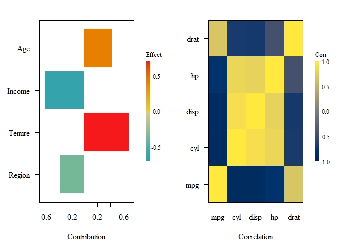
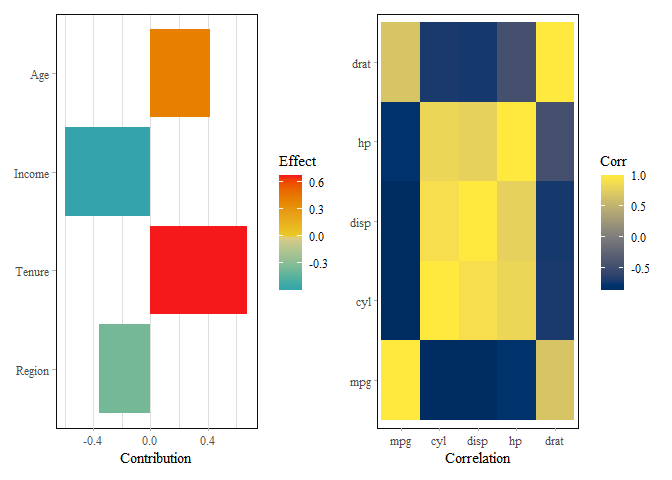

dualplot provides a unified, lightweight set of 2D plotting primitives that render seamlessly with either Base R graphics (engine = "graphics") or ggplot2 (engine = "ggplot2").
Designed as a zero-heavy-dependency visualization backend for statistical and machine learning packages (such as midr), dualplot keeps ggplot2 strictly in Suggests while offering bidirectional aesthetic translation, unified legends, and clean monograph styling across both backends.
Installation
You can install the development version of dualplot from GitHub with:
# install.packages("pak")
pak::pak("ryo-asashi/dualplot")Core Primitives
All six plotting primitives share a consistent interface (theme, theme.values, legend, legend.title, engine, and ...):
| Function | Description |
|---|---|
draw_bars() |
Horizontal/vertical bar charts, dot charts (type = "dot"), grouped bars, and waterfall charts (connect = TRUE) |
draw_lines() |
Multi-line series and ICE curves over continuous or discrete x-axes, with optional point overlays |
draw_points() |
Scatter and jitter plots with continuous or discrete color mapping and Base overlay support |
draw_boxes() |
Horizontal or vertical grouped boxplots |
draw_matrix() |
Symmetric or square matrix heatmaps (e.g., correlation or pairwise interaction importance matrices) |
draw_surface() |
2D grid heatmaps / interaction surfaces with optional data-point overlays |
Quick Example
library(dualplot)
effects <- c(Age = 0.42, Income = -0.60, Tenure = 0.68, Region = -0.36)
cm <- cor(mtcars[, 1:5])
# 1. Base R graphics (zero ggplot2 dependency)
old_par <- par_monograph(mfrow = c(1, 2))
draw_bars(
effects,
theme = "Zissou 1",
xlab = "Contribution",
legend = "right",
legend.title = "Effect",
engine = "graphics"
)
draw_matrix(
cm,
theme = "Cividis",
xlab = "Correlation",
legend = "right",
legend.title = "Corr",
engine = "graphics"
)
par(old_par)
# 2. Switch seamlessly to ggplot2
library(ggplot2)
#> Warning: package 'ggplot2' was built under R version 4.5.3
library(patchwork)
p1 <- draw_bars(
effects,
theme = "Zissou 1",
xlab = "Contribution",
legend = "right",
legend.title = "Effect",
engine = "ggplot2"
) +
theme_monograph(grid.type = "x")
p2 <- draw_matrix(
cm,
theme = "Cividis",
xlab = "Correlation",
legend = "right",
legend.title = "Corr",
engine = "ggplot2"
) +
theme_monograph()
p1 + p2
Global Options & Styling
-
Engine selection: Set the default rendering backend globally via
dualplot_options(engine = "ggplot2")ordualplot_options(engine = "graphics"). -
Default ggplot2 theme: Attach a default theme automatically to all
ggplot2outputs viadualplot_options(gg.theme = theme_monograph()). -
Unified parameter translation: Pass either Base R (
col,pch,cex,lty,lwd,main) orggplot2(colour,shape,size,linetype,linewidth,title) aesthetic arguments to anydraw_*()function; dualplot translates and filters them automatically for the active backend. -
Unified legends: Control legend visibility and placement across both engines using
legend = TRUE/FALSE, inside corners ("topright","topleft","bottomright","bottomleft"), or outside margins ("top","bottom","left","right").